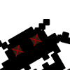

Общая информация
Что тут нужно делать.
Цель игры проста: уничтожить всех роботов и попасть на следующий уровень. Выше уровень - больше роботов. Больше роботов - увлекательнее игра. Больше набранных очков. Ближе выигрыш.
Как этого добиться.
Мы продумали игровой процесс и включили в него много интересных фич: телепорт, безопасный телепорт, ловушки и бомбы. Грамотно используя все эти инструменты, вы быстро научитесь хорошо играть и с лёгкостью достигните вершины рейтинга игроков.
Правила
Обозначения.
| Игрок | |
| Робот | |
| Быстрый робот | |
|  | Куча |
| Телепортация | |
| Безопасная телепортация | |
| Мина-ловушка | |
| Взрыв бомбы | |
| Счёт | |
| Энергия | |
| Количество роботов |
Что к чему.
Если вы сильно умный, можете просто пропустить этy часть. Но мы бы вам не советовали этого делать, потому что знание всех правил игры ещё никому не навредило.
Телепорт - простое перемещение по полю. Используя телепорт вы однажды можете попасть в зону действия робота. Там и умрёте.
Безопасный телепорт - перемещение за 1 очко энергии. Вы окажетесь на клетке, на которой сейчас робот вас точно не достанет. Но не факт, что на следующий ход после телепорта он не окажется рядом с вами.
Ловушки - оставляете эту штуку на клетке и заманиваете на неё робота. Тратится 3 очка энергии. Попадётесь на неё сами - мы не виноваты.
Бомбы - большой бабах вокруг игрока; стоимость показана на кнопке и зависит от количества врагов поблизости.
Что ещё?
При столкновении робота с роботом образуется куча. При столкновении робота и кучи остаётся куча. Кучи можно толкать на роботов. Очень даже нужно. А можно просто встать за кучу и стоять там.
Куда идти?
На все четыре стороны. И ещё по диагонали. Или на месте стоять. Тоже полезно бывает.
Будьте внимательны! Игра достаточно бесконечна. Выиграть можно (теоретически), но очень сложно. Однако довольно просто повысить самооценку за счёт большего количества очков, чем у ваших друзей.
О настройках
Настройки.
Включение/отключение звука - очевидная и полезная настройка.
Включение/отключение безопасного режима - включить/отключить высшие силы, которые остерегут вас от неправильно пути. В безопасном режиме к роботам не подойти. Как в зоопарке.
Изменение параметров внешнего вида - мы не виноваты, нас тестировщики уговорили.
Выбор размеров поля - вы можете задать любую длину и высоту доски, но в пределах от 15 до 80 клеток, ради вашего же блага.
Выбор сложности - сами выбирайте, в каком количестве вам нужны шустрые роботы. Но не забывайте и о награде: чем сложнее играть, тем она выше.
Усложнить задачу могут дополнительные режимы игры. В режиме "Дефицит энергии" вам придётся экономить на всём. Энергия выдаётся только один раз - в начале игры.
Другой режим поощряет агрессивный стиль игры. Если вы уничтожаете робота, задавив его кучей мусора, то можете пополнить запасы энергии. В сочетании с "дефицитом энергии" этот режим даёт несколько иную ситуацию: энергия не выдаётся вообще, чтобы получить её, придётся охотиться.